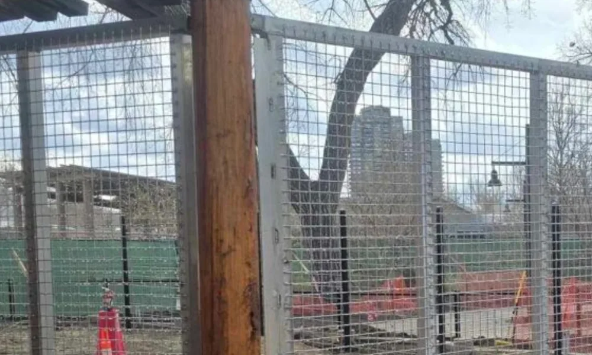

Quick Answer
A zoo enrichment box is a custom-designed enrichment device that encourages animals to perform natural behaviors such as foraging, problem-solving, exploration, climbing, and food searching. Rather than simply providing entertainment, enrichment boxes are carefully integrated into animal care programs to improve mental stimulation, promote physical activity, reduce abnormal repetitive behaviors, and enhance overall animal welfare. Modern zoological facilities use enrichment boxes alongside habitat design and positive husbandry practices to create more engaging environments for animals under professional care.
Introduction
Modern zoos have evolved far beyond simply providing secure habitats for animals. Today, accredited zoological facilities focus on creating environments that support both the physical and psychological well-being of the animals in their care.
One of the most effective ways to do that is through environmental enrichment — the carefully planned activities, objects, and challenges that push animals to express the behaviours they'd perform in the wild. These experiences spark curiosity, invite exploration, get animals moving, and cut the boredom of a static environment. Research backs it up: well-designed enrichment programs improve welfare by increasing behavioural diversity and reducing the repetitive behaviours that tend to show up in under-stimulating enclosures.
Among the many enrichment tools available, zoo enrichment boxes have become one of the most versatile and widely used solutions. Properly designed enrichment boxes encourage animals to search, investigate, manipulate objects, and solve simple challenges while supporting species-specific behaviors and daily husbandry routines.
When incorporated into a comprehensive enrichment program, these custom-fabricated devices help create healthier, more stimulating environments that benefit both animals and animal care professionals.
What Is a Zoo Enrichment Box?
A zoo enrichment box is a specially designed enclosure accessory that provides animals with opportunities to interact with their environment in meaningful and engaging ways.
Unlike feeding containers or storage boxes, enrichment boxes are intentionally created to encourage natural behaviors. Depending on the species and management goals, they may contain hidden food, scents, movable components, browse materials, or interactive features that motivate animals to explore and solve simple challenges.
Rather than obtaining food immediately, animals are encouraged to spend time investigating, manipulating, or foraging within the enrichment box. This process more closely resembles the effort required to locate food and resources in natural habitats.
Enrichment boxes can be developed for a wide variety of species, including:
- Large carnivores
- Primates
- Bears
- Elephants
- Rhinoceroses
- Hoofstock
- Small mammals
- Birds
- Reptiles
Because every species has unique behavioral needs, enrichment boxes are typically custom designed to match the animal's physical abilities, natural behaviors, and husbandry objectives.
Why Environmental Enrichment Is Essential in Modern Zoos
Animals living in professionally managed zoological facilities no longer spend their days simply occupying an exhibit. Modern husbandry emphasizes providing animals with opportunities to make choices, solve problems, explore their surroundings, and engage in species-appropriate activities.
Without adequate environmental stimulation, animals may have fewer opportunities to express natural behaviors. Over time, this can contribute to reduced behavioral diversity and, in some cases, the development of repetitive behaviors that indicate the need for more engaging environments.
Environmental enrichment helps address these challenges by encouraging animals to interact with their surroundings in ways that more closely reflect their natural behavioral repertoire.
A well-designed enrichment program can help:
- Encourage natural foraging behaviors
- Increase physical activity
- Stimulate cognitive engagement
- Promote exploration and curiosity
- Reduce boredom
- Increase behavioral diversity
- Support positive welfare outcomes
- Enhance daily husbandry routines
Enrichment boxes are particularly valuable because they combine many of these benefits into a single, adaptable tool that can be customized for different species, habitats, and management objectives.
Enrichment Boxes as Part of a Complete Zoo Enclosure System
Environmental enrichment is most effective when integrated into the overall enclosure design rather than added as an afterthought.
Professionally designed enrichment boxes work alongside other enclosure components such as keeper doors, shift gates, holding areas, and squeeze cages to support safe and efficient animal management. For example, enrichment devices may be placed in an exhibit after an animal has been shifted into a holding area, allowing keepers to refresh the habitat safely before reintroducing the animal.
This coordinated approach enables zoos to provide regular enrichment while maintaining protected contact practices and minimizing disruption to daily operations. It also reinforces the idea that animal welfare depends not only on individual enrichment devices but on a thoughtfully designed enclosure system that supports both the animals and the professionals who care for them.
Types of Zoo Enrichment Boxes and How They Support Animal Welfare
Not all enrichment boxes do the same job. Each device is built to encourage a specific natural behaviour that keeps an animal mentally sharp, physically active, and engaged — and the right design depends on the species, the husbandry goals, the enclosure layout, and the individual animals themselves.
Modern zoological facilities often rotate enrichment devices regularly to introduce novelty and prevent animals from becoming overly familiar with a single object. This variety helps maintain curiosity and encourages continued interaction with the environment.
Food and Foraging Enrichment Boxes
The most common enrichment boxes are built to bring back natural foraging behaviour. In the wild, many animals spend a big share of the day hunting for food — manipulating objects, digging, climbing, or solving problems to get at a meal. Drop that food in a bowl and all of that effort simply disappears.
Foraging enrichment boxes recreate part of this experience by requiring animals to investigate, manipulate, or search before obtaining food. Examples include:
- Hidden food compartments
- Puzzle feeders
- Rotating food dispensers
- Suspended feeding boxes
- Browse holders for herbivores
- Multi-chamber feeding devices
These designs increase feeding time, encourage exploration, and provide valuable cognitive stimulation while supporting species-specific feeding behaviors.
Cognitive Enrichment Boxes
Plenty of zoo animals are formidable problem-solvers. Primates, bears, elephants, parrots, and several carnivores show real curiosity and intelligence, which makes cognitive enrichment an important part of their daily management.
Cognitive enrichment boxes are designed to encourage animals to think, investigate, and solve simple challenges before accessing a reward. These devices may incorporate:
- Sliding panels
- Rotating mechanisms
- Levers
- Multiple compartments
- Sequential opening systems
- Simple puzzle elements
The goal is not to make obtaining food difficult but to encourage active engagement and stimulate natural exploratory behaviors. Research has shown that providing cognitive challenges can increase behavioral diversity and contribute to positive welfare outcomes by reducing inactivity and encouraging species-appropriate behaviors.
Sensory Enrichment Boxes
Animals read the world through smell, touch, hearing, and sight. Sensory enrichment boxes play to that, introducing new scents, textures, sounds, or materials that pull an animal in to investigate. Depending on the species, that might include:
- Natural browse materials
- Herbs and spices
- Animal-safe scents
- Different textures
- Bark, wood, or natural fibers
- Water-based enrichment elements
Regularly changing sensory experiences helps maintain curiosity while supporting natural investigative behaviors.
Manipulative Enrichment
Many species handle objects instinctively — primates work branches and tools, bears flip logs looking for food, elephants explore with their trunks. Give them the chance to do the same inside an enclosure and they stay physically and mentally engaged.
Manipulative enrichment boxes are designed to withstand repeated handling while allowing animals to push, pull, rotate, lift, open, carry, and investigate. These activities encourage physical movement while supporting problem-solving and exploratory behavior.
Because these devices often experience substantial wear, they require durable materials and precision fabrication to ensure long-term safety and reliability.
Species-Specific Enrichment Matters
No single enrichment box is suitable for every species. Effective enrichment begins with understanding how animals naturally interact with their environment. For example:
- Large cats benefit from enrichment that encourages stalking, scent investigation, and food-searching behaviors.
- Primates often respond well to puzzle-based devices that challenge their dexterity and problem-solving abilities.
- Bears are highly motivated by enrichment that promotes digging, manipulation, and extended foraging.
- Elephants require large, durable enrichment structures capable of withstanding significant force while encouraging exploration with their trunks.
- Hoofstock may benefit from browse feeders and enrichment that supports natural grazing or browsing behaviors.
Designing enrichment around the biological and behavioral characteristics of each species helps maximize engagement while supporting positive welfare outcomes.
Rotating Enrichment for Continued Engagement
Even the best enrichment device goes stale if it shows up the same way every day. To keep interest high, zoos rotate enrichment boxes, vary how food is presented, and introduce fresh scents, textures, or challenges on a planned schedule — which heads off habituation and keeps animals exploring with real curiosity.
Rather than relying on a single enrichment item, animal care teams typically use a combination of devices and techniques that complement one another. This flexible strategy promotes behavioral diversity while allowing enrichment programs to evolve alongside the changing needs of individual animals.
Engineering and Fabrication of Zoo Enrichment Boxes
An enrichment box is only effective if it is both engaging for the animal and durable enough to withstand repeated daily use. Unlike toys designed for domestic pets, zoo enrichment boxes are exposed to powerful animals, changing weather conditions, frequent cleaning, and continuous interaction that can place significant stress on the equipment.
For this reason, enrichment boxes used in zoological facilities require thoughtful engineering, appropriate material selection, and precision fabrication to ensure they remain safe, functional, and reliable throughout their service life. Rather than producing standardized products, professionally fabricated enrichment boxes are typically custom-designed to match the behavioral needs of the species and the operational requirements of the zoo.
Materials Used in Zoo Enrichment Box Fabrication
The choice of materials directly influences the durability, safety, and longevity of an enrichment device. Because animals interact with enrichment boxes through biting, pushing, pulling, scratching, climbing, or manipulating different components, every material must be capable of withstanding repeated use without creating hazards.
Structural steel. Structural steel is commonly used for the main framework of enrichment boxes designed for medium and large animal species. Its strength allows fabricators to create rigid structures that resist deformation while supporting moving components, food compartments, and attachment systems. Structural steel also provides flexibility for custom fabrication, enabling enrichment boxes to be designed in a wide range of shapes and sizes to suit different enclosure layouts and management objectives.
Stainless steel components. Components that experience frequent movement or direct food contact often benefit from stainless steel construction — hinges, latches, rotating mechanisms, fasteners, sliding components, food trays, and hardware exposed to moisture. Its excellent corrosion resistance helps maintain smooth operation even after repeated cleaning and exposure to outdoor environments.
Animal-safe materials. Every material incorporated into an enrichment box must be appropriate for the species using it. Sharp edges, toxic coatings, loose components, or materials that can splinter or break apart should be avoided. Professional fabrication emphasizes rounded edges, smooth welded joints, secure fasteners, non-toxic finishes, durable construction, and easy-to-clean surfaces. These design principles help reduce injury risks while supporting long-term reliability.
Engineering for Different Animal Species
No single enrichment box can effectively serve every animal. Species differ in size, strength, intelligence, feeding behavior, and methods of interacting with objects. As a result, enrichment devices should be engineered around the biological and behavioral characteristics of the intended species. For example:
- Large carnivores require heavily reinforced enrichment devices capable of resisting powerful bites, clawing, and repeated impact.
- Primates benefit from enrichment boxes that incorporate multiple moving components and problem-solving opportunities while withstanding frequent manipulation.
- Elephants require exceptionally robust structures designed to tolerate significant pulling, lifting, and pushing forces generated by the trunk.
- Bears often manipulate enrichment devices aggressively, making structural reinforcement and secure mounting particularly important.
- Birds and smaller mammals may require lightweight designs that encourage climbing, pecking, or exploratory behaviors while remaining safe and durable.
By tailoring the engineering to each species, enrichment boxes become more engaging, safer to use, and more effective at promoting natural behaviors.
Designing for Daily Zoo Operations
An enrichment box should not only benefit the animal — it should also support the daily workflow of animal care staff. Well-designed enrichment devices are easy to load with food or browse, clean and disinfect, inspect for wear, repair or maintain, remove and replace, and rotate between enclosures.
Considering these operational requirements during the design stage helps reduce maintenance time while encouraging enrichment to be incorporated consistently into daily husbandry routines. This practical approach benefits both the animals and the professionals responsible for their care.
Precision Fabrication for Long-Term Reliability
Precision manufacturing is essential because enrichment boxes experience repeated use under demanding conditions. Accurate fabrication ensures that moving components operate smoothly, hinges remain properly aligned, welds maintain structural integrity, fasteners remain secure, doors and access panels close correctly, and attachment points withstand repeated loading.
High-quality fabrication also simplifies routine inspections and maintenance, helping zoos keep enrichment equipment in safe working condition for many years.
Why Custom Fabrication Delivers Better Results
Commercially available enrichment products may be suitable for some applications, but they often cannot accommodate the unique requirements of zoological facilities. Custom fabrication allows every enrichment box to be designed specifically for the target species, desired enrichment objectives, feeding methods, enclosure layout, keeper access, cleaning procedures, long-term durability, and integration with the overall enclosure system.
By tailoring enrichment devices to both the animals and the operational needs of the facility, custom fabrication creates more effective enrichment programs while supporting safer, more efficient zoo management.
Choosing the Right Zoo Enrichment Box Fabrication Partner
An effective enrichment program depends on more than creative ideas. The quality of the enrichment equipment itself plays an important role in ensuring that enrichment remains safe, engaging, and practical for long-term use.
Zoo enrichment boxes are handled daily by both animals and animal care professionals. They must withstand repeated interaction, frequent cleaning, changing environmental conditions, and the unique physical abilities of different species. Selecting an experienced fabrication partner helps ensure that every enrichment device performs reliably while supporting the zoo's animal welfare goals.
Rather than purchasing generic enrichment products, many zoological facilities invest in custom-designed enrichment boxes that are tailored to their species, enclosure layouts, and husbandry programs. Not every metal fabrication company understands the unique requirements of zoological environments, so the following qualities are particularly important.
Species-Specific Design Expertise
Every animal interacts with enrichment differently. A puzzle feeder designed for a chimpanzee will have very different design requirements than an enrichment box intended for a tiger, elephant, bear, or giraffe. Strength, dexterity, feeding behavior, curiosity, and physical size all influence how an enrichment device should be engineered. Custom fabrication ensures each enrichment box supports natural behaviors while remaining safe for both the animals and the staff who maintain it.
Durable Construction for Daily Use
Enrichment equipment is exposed to constant wear. Animals may bite, claw, pull, lift, roll, strike, or manipulate enrichment devices repeatedly throughout the day. Outdoor exposure, cleaning chemicals, moisture, and temperature changes further increase the demands placed on the equipment. High-quality fabrication using durable materials and precision manufacturing helps ensure enrichment boxes continue performing safely with minimal maintenance over many years.
Easy Maintenance and Cleaning
Zoo professionals use enrichment equipment every day, making practical maintenance an important consideration. Well-designed enrichment boxes should be easy to load with food or enrichment materials, inspect for damage, clean and sanitize, repair if necessary, rotate between exhibits, and remove and reinstall. Designing for efficient maintenance helps reduce labor while allowing enrichment programs to remain consistent and effective.
Integration with the Complete Enclosure System
Environmental enrichment should complement — not interfere with — daily zoo operations. Custom enrichment boxes can be designed to work alongside keeper doors, shift gates, holding areas, squeeze cages, transfer corridors, feeding systems, and veterinary management routines. This integrated approach allows keepers to introduce or replace enrichment safely while maintaining protected contact and minimizing disruption to daily husbandry activities.
Why Custom Fabrication Is the Better Choice
Every zoo has different species, exhibits, operational procedures, and conservation goals. Because of these differences, custom fabrication offers significant advantages over standardized enrichment products. A custom-designed enrichment box can be engineered specifically for individual animal species, behavioral enrichment objectives, feeding strategies, enclosure dimensions, existing enclosure infrastructure, keeper accessibility, cleaning and maintenance procedures, and future enclosure modifications. This flexibility allows zoological facilities to create enrichment programs that better support both animal welfare and operational efficiency.
Frequently Asked Questions
What is a zoo enrichment box?
A zoo enrichment box is a specially designed device that encourages animals to perform natural behaviors such as foraging, exploring, manipulating objects, and solving simple challenges. It forms part of a broader environmental enrichment program that supports physical and psychological well-being.
Why are enrichment boxes important?
Enrichment boxes help increase behavioral diversity, encourage natural activities, reduce boredom, and provide cognitive and physical stimulation. They are widely used by modern zoos to improve animal welfare and create more engaging environments.
Which animals use enrichment boxes?
Enrichment boxes can be designed for a wide range of species, including lions, tigers, bears, primates, elephants, rhinoceroses, giraffes, hoofstock, birds, reptiles, and small mammals. Each device is typically customized to match the biological and behavioral needs of the species.
What materials are best for zoo enrichment boxes?
Professionally fabricated enrichment boxes commonly use structural steel, stainless steel hardware, heavy-duty welded components, and animal-safe finishes. Material selection depends on the target species, expected wear, and environmental conditions.
How often should enrichment boxes be changed?
Rather than relying on the same enrichment device continuously, zoos typically rotate enrichment boxes and vary enrichment activities to maintain novelty and encourage ongoing engagement. Rotation schedules depend on the species, enrichment goals, and husbandry program.
Can enrichment boxes be customized?
Yes. Most professional zoological facilities use custom-fabricated enrichment boxes designed around the behavior, size, strength, feeding habits, and enclosure requirements of the species they manage.
Final Thoughts
Environmental enrichment has become a cornerstone of modern zoo management, helping animals remain mentally stimulated, physically active, and behaviorally engaged. Among the many enrichment tools available, enrichment boxes offer a practical and versatile way to encourage natural behaviors while supporting daily husbandry and animal welfare objectives.
Their success, however, depends on more than creative concepts. Safe design, durable materials, precision engineering, and species-specific fabrication are all essential to creating enrichment equipment that performs reliably in demanding zoological environments.
When thoughtfully integrated with keeper doors, shift gates, holding areas, and other enclosure systems, custom enrichment boxes become an important part of a comprehensive approach to animal care — one that balances enrichment, operational efficiency, and long-term safety.
References
This article is informed by peer-reviewed research and established zoological best practices, including:
- Studies published in Zoo Biology on environmental enrichment and behavioral management.
- Research from Frontiers in Psychology exploring animal cognition, environmental complexity, and welfare.
- Articles from the Journal of Applied Animal Welfare Science examining the role of enrichment in promoting species-appropriate behaviors.
- Recent research published in ScienceDirect on enrichment strategies and animal welfare outcomes.
- Practical guidance from the International Zoo Yearbook on implementing environmental enrichment programs in zoological facilities.